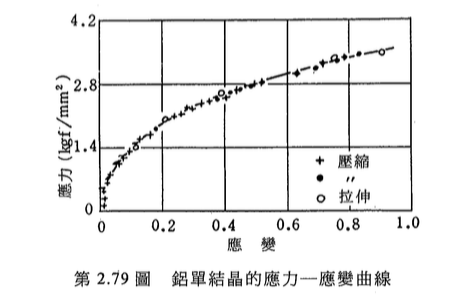
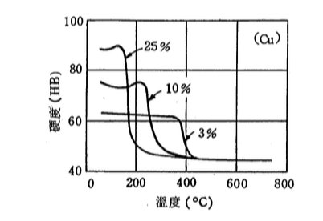
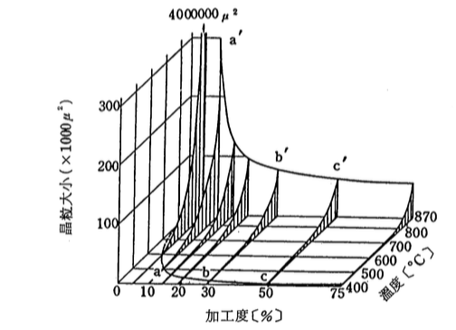
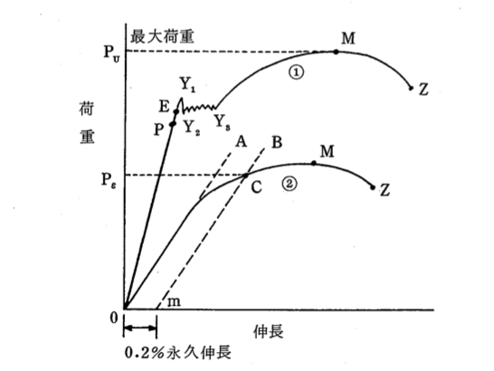
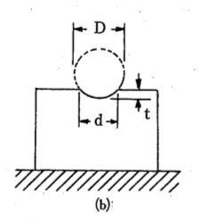

Plastic Deformation
這裡是上週複習
slip and twin
Dislocation Theory
-
types:
- edge dislocation : b 垂直 t
- screw dislocation : b 平行 t
- mixed dislocation
Dialocation的來源至少有二，其中一個是結晶時產生有洞的晶格，二者是晶界間本身就很難形成完整的密合，也會形成插排。
Burges Vector
dislocation source and its multiplication: Frank-Read Source
Frank Read Source
- Work Hardening(加工硬化)
- 與Dislocation的pile up有關
- 多晶體之晶粒對變形影響
- Hole-Petch Equation
可以想想材料力學那邊，拉伸試驗的曲線。拉到一定程度的時候就會進入塑性變形，材質就會變得比較脆。金屬的加工不外乎拉、擠、壓，所以加工的過程中，金屬越變形就會越變脆，這就是所謂的「加工硬化」。
在「插排理論」的解釋之中，成因為因為不同方向的插排在滑動時「卡在一起」，不同方向的插排就會撞車而動彈不得，堆積在撞車的地方。
金屬的滑動通常會在晶界卡住(一般的用語是「晶界能量比較高」，因為需要比較多能量去穿越他)。卡住還不說，晶界彼此之間的滑動方向也可能不同，如果相鄰的晶粒滑動方向不同，那也沒辦法順利滑過去，插排也會堆積。
所以說，如果要讓金屬變硬，也就是要減少滑動的順暢程度，也就是要讓晶粒盡可能小，這樣一來原子面的滑動就很容易受到阻礙，而很難形變。因此有了Hole-Petch Equation：
$$\sigma_{y} = \sigma_{0} + kd^{-\frac{1}{2}}$$
其中\(\sigma_{y}\)是降伏強度，d是晶粒大小。也就是經驗上來說，晶粒越少，材料強度就越高。
比較：單晶與多晶的強度：
單晶如下：
多晶如下

可以發先多晶的應力，最低也有10左右，但是單晶拉到嘴大也只有5左右。這就是晶界的影響。
所以，加工金屬的過成大蓋如下：

拉到一定程的的時後，開始出現滑動(b)，接著連比較不容易滑動的滑動面也因為受力開始滑動(c)，晶粒開始變型（或說「轉向」），最後全部成為纖維化組織。
加工後材料之退火及再結晶
金屬被你拉到很緊了。這時突然想到一件事：那可不可以把它加熱，讓金屬稍微變軟，嚷原子間稍微可以自由活動？然後他們就會自動往應力比較小的地方跑，最後金屬內部的應力就可以順便消除了。
答案是肯定的，這個過程就叫「退火」
退火的意思是，把加工硬化的金屬加熱，讓金屬原子可以自由移動，這時候本來內很緊繃，現在可以自由活動後，就不會那麼緊繃了。退火大概分成兩個階段：

Recovery
這時候溫度高到使原子可以往鄰近的地方排好，因此插排與空洞就有機會消失，位置很奇怪的原子也可以順離回到該去的地方。 另外，插排的行為其實很像泡泡，所以一旦讓金屬變得稍微鬆軟，泡泡就容易聚在一起，也就是插排會有再排列的現象。
因為這時原子指示移動到鄰近處，所以位能釋放幅度較小。由上圖可以觀察得到。
Recrystalizatopn
當能量高繼續變高，那原子就可以擴散。這時候原子之間進行的是大幅度地移動。既然都可以跑這麼遠了，幹嘛不直接形成新的結晶呢？嗯...然後他就乖乖聽妳的話跑去結晶了。
再結晶顧名思義，就是原子重新結晶。因為溫度夠高，可以讓原子更自由地移動，因此重新形成結晶也不是什麼問題了。這時候是工程師很重要的一環，還記得「晶粒越小，材料越強」嗎？ 這時候就是控制晶粒大小、材料強度的好時機。
再結晶開始發生的溫度叫再結晶溫度。再結晶溫度會受到一些變數影響，比如說：
加工量：加工量越大，需要的再結晶溫度越低，產生再結晶的晶粒越小。這其實很好懂，想像一下你把一個彈簧拉越緊，那他應該越容易彈回去。
所以其實加工量也不能太小。因為加工量太小，就沒辦法形成小的再結晶。材料性質就變弱了。
時間、溫度
有一個經驗法則是：再結晶溫度大約是熔點的0.3 ~ 0.6：
$$T_{r} = 0.3T_{m} ~ 0.6T_{m}$$
以鐵為例，綜合來說，可以用下圖表示：

-
註：再結晶大致上依照某種擴散定律。作業有相關的練習。不過大致來說：
$$ln(t) = C + B / T$$
其中t是時間，T是溫度，V, B是常數。
這裡開是本週上課內容
Mechanical Properties of Materials
材料的機械性質～～
先看看金屬的一些常見性質：
物理性質：
比重：比如說想要把東西做得很輕量，就需要用到比重。
比熱
膨脹係數：比如說要做模具，就很要注意熱膨脹。不然上模對不起下模就尷尬惹。
導熱度、電倒...
化學性質：
金屬離子化、腐蝕：比較少見。可能防鏽會需要吧？
高溫氧化：很重要，比如說做熱處理的時候。
但是，最重要的，是材料的機械性質：強度、韌性、剛性等等。因為來設計不同用途的機械時，就需要針對不同狀況，選擇合適的材料。
不過俗話說的好，量出來的東西才有意義。所以就要先看一下各種機械性質是怎麼量測的。他們分別有：
拉伸試驗(Tensile Test)
試用一種叫「萬能試驗機」的東西來測一個標準試片。以前是用機械連動指針，現在都是數位化的東西了。可以去看Coursera台大材料力學的影片，裡面有很詳細的說明！
Tensile Test最白話的講法就是拉一塊特定規格的試片，然後冷血地記下把它拉斷的過程：
這整個試驗自己去看Coursera影片～～裡面講得超級超級清楚。
硬度測試(Hardeness Test)
硬度試驗比拉伸試驗便宜很多。
總共有下面幾種：
Brinell Hardness：HB, \(H_{B}\)
用一個標準鋼球(通常是3,000公斤或500公斤)，去壓試片。壓完之後會留下一個凹痕，像這樣：
算完之後，帶入公式：$$\frac {2P} {\pi D(D - \sqrt{D^{2} - d^{2}})}$$
就可以求得。不過這個計算很麻煩，所以通常會建好表。壓完之後直接查表，就可以了。
測試過程有不同的規格，通常用「鋼球直徑mm/重量/秒」來簡記。比如說10/3000/30表示鋼球直徑10mm, 荷重3,000公斤, 壓30秒。荷重越重一般來說會越準，但是有的材料比如說薄板不適合用太重的荷重。
- Rockwell Hardness：HRC, HRB, \(HR_{C}\), \(HR_{B}\)
Brinell硬度雖然好，但是每次測試都需要大費周章。但是在以前美國汽車業剛開始發達的時代，為了在生產線上做品管，不可能使用Brinell測試。所以就發明了Rockwell Hardeness
Rockwell 測試過程如下：
- 因為表面不純，所以先用一個小荷重預壓，得到深度\(t_{1}\)
- 接著才是真正的開始。在小荷重上加一個大荷重一段時間，再把大荷重移開。看看大荷重留下的深度h為多少(單位是用0.002mm)。
得到h之後，依照頭是鑽石或鋼球，硬度分別規定為：
- \(HRC = 100 - 500h\)
- \(HRB = 130 - 500h\)
用來壓試片的頭，可以是金剛石，或是 \(\frac{1''}{16}\phi\)鋼珠等等規格。
- Vickes Hardness：HV, \(H_{V}\)
- Shore Hardness：HS, \(H_{S}\)